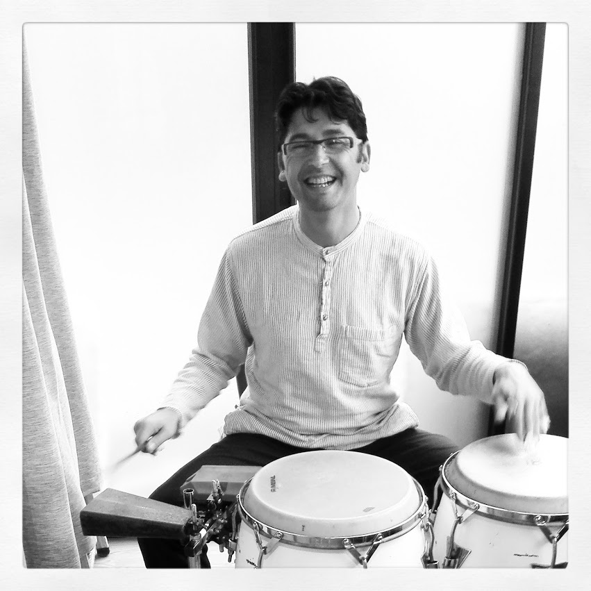

Jeux d’écriture collectifs, textes courts qui seront ensuite slamés en musique. Percussions, pad électronique et voix.
Les participants sont tour à tour musiciens ou tchatcheurs, sur des rythmes s’inspirant des musiques du monde, du hip hop et d’un imaginaire décalé.
Le but des ateliers étant d’expérimenter la composition musicale de façon ludique.
Musicien voyageur, France (Bretagne et Languedoc), Tunisie et Norvège.Cajon flamenca, bongos cubains, derbouka d’orient et batterie pour un son actuel, plus chœurs chantés.
Auteur de textes, pour une chanson française inventive. Pleine de gouaille et d’images poétiques, parfois aux couleurs du hip hop. Les mots, aux accents comme une mosaïque, sont des outils sonores au service de la mélodie.
